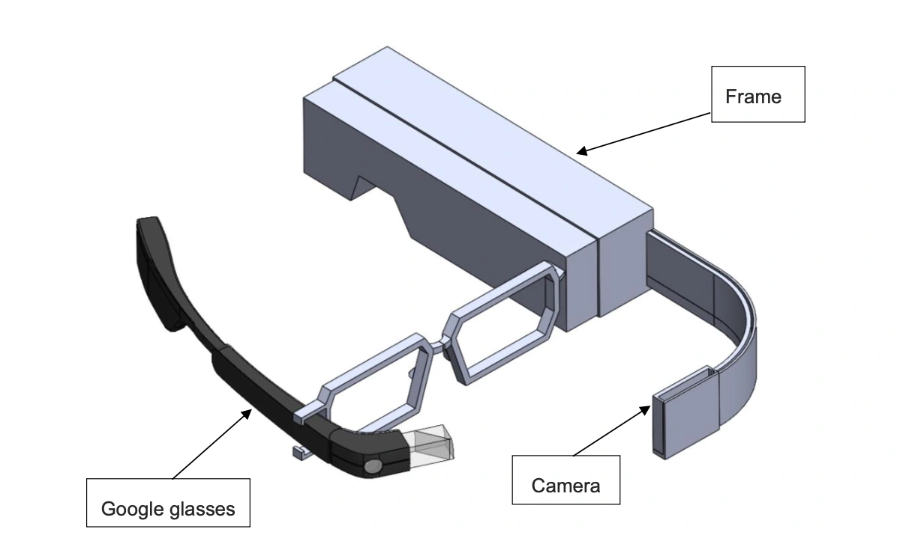
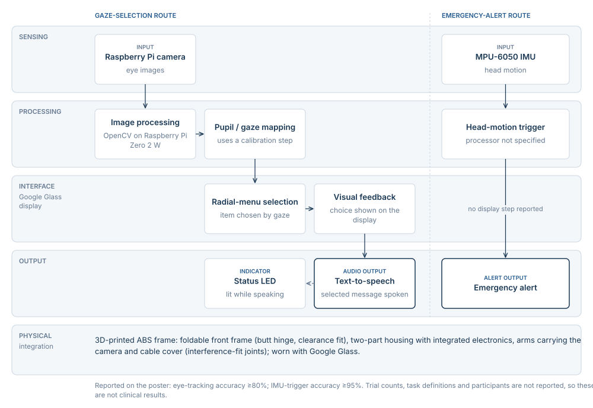
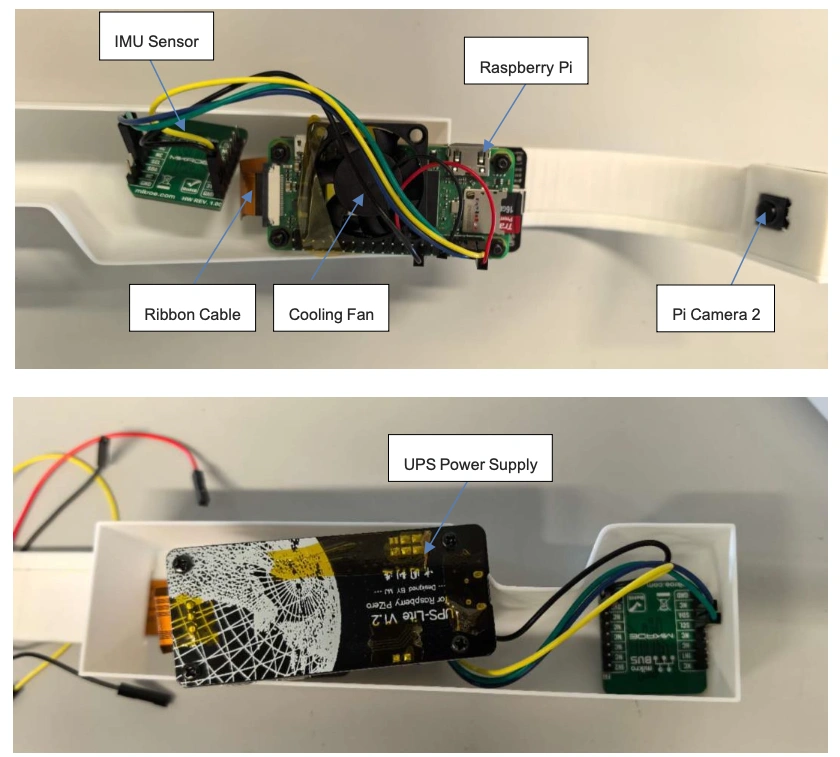
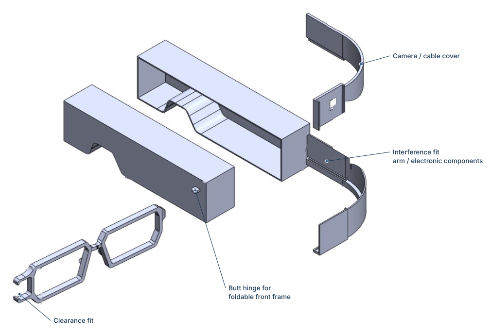
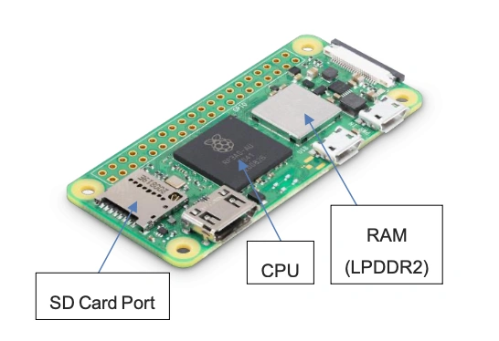
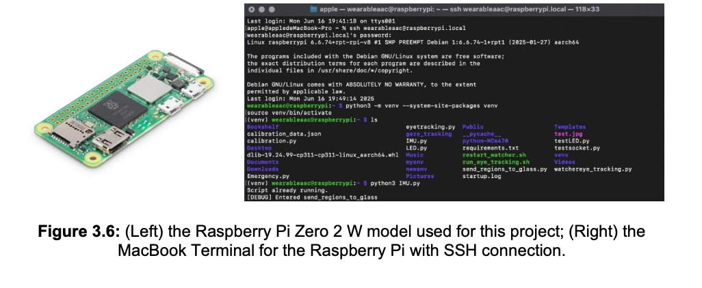
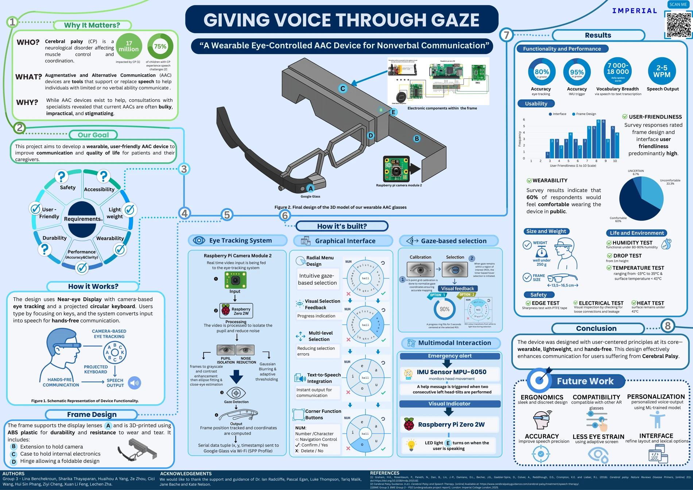

Wearable eye-controlled communication
Electronics and integration for gaze selection, head-motion input and speech output.

The research question
How can gaze tracking and head-motion input support selection and speech in a wearable communication device?
An integrated prototype linking camera-based gaze and head-motion input to a wearable selection interface and speech output.
Two input routes within one wearable system

Gaze pathway
Camera processing estimates pupil position, maps gaze and transmits coordinates to a Google Glass radial-menu interface with selection feedback.
Additional interaction
The poster describes an IMU-triggered emergency alert and a speaking-status LED alongside text-to-speech output. The prototype is shared team work.
What the work shows
Assembled wearable electronics


Processing board and development environment



Read the figures with their test limits.
- Eye tracking
- 80% or greater
- IMU trigger
- 95% or greater
The poster reports these prototype results. A larger evaluation with documented tasks and participants would be needed to assess performance for intended users.
Open original posterElectronics within a shared prototype
The team combined a Raspberry Pi Zero 2 W, camera-based eye tracking, an MPU-6050 IMU and a Google Glass interface. The complete device, software and evaluation were shared team work supervised by Ian Radcliffe.
From gaze to selection
The system processes eye images through grayscale conversion, noise reduction, thresholding and pupil detection. It maps the detected gaze position to coordinates in a radial menu, then provides visual feedback and text-to-speech output.
Project scope
Prototype evidence and its limits
The team poster reports eye-tracking accuracy of at least 80% and IMU-trigger accuracy of at least 95% for the prototype. Evaluation with documented trial counts, tasks and intended users would be needed to assess precision and long-term communication performance.